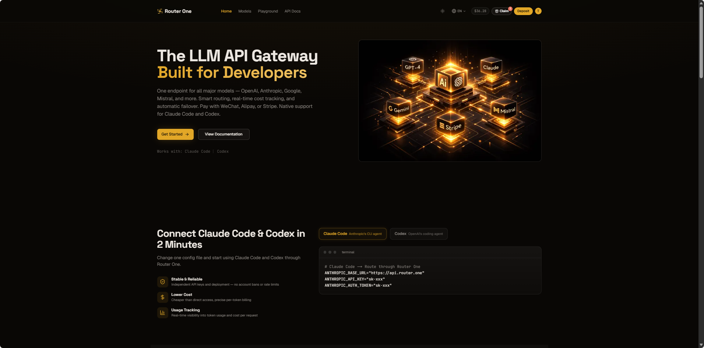
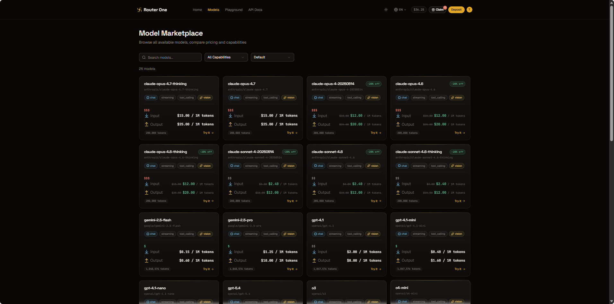
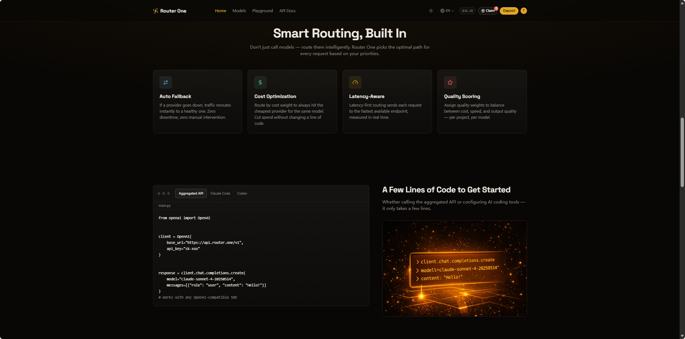
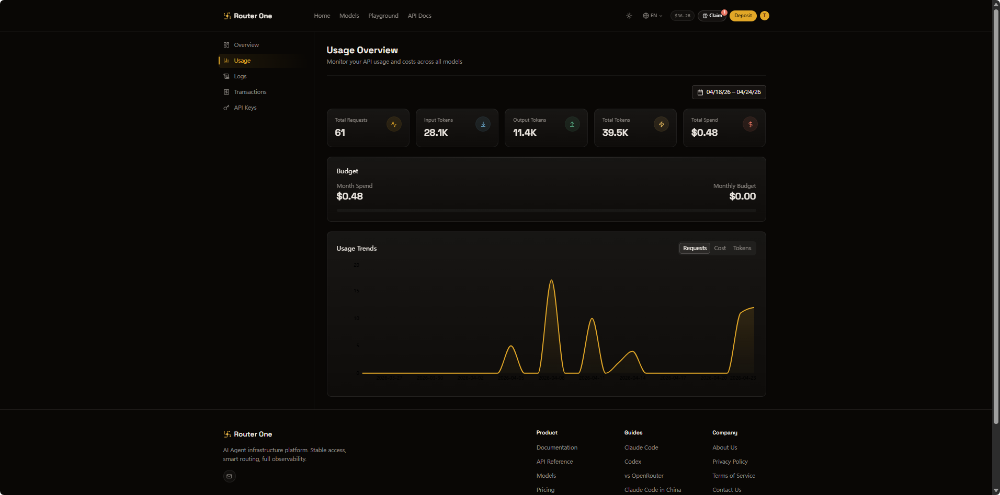

A LLM API gateway built for developers. One endpoint for OpenAI, Anthropic, Google, Mistral and more — with smart routing, real-time cost tracking, and automatic failover between providers.
为开发者做的 大模型 API 网关。一个统一入口覆盖 OpenAI、Anthropic、Google、Mistral 等主流模型 —— 带智能路由、实时成本追踪,以及在不同 provider 之间的自动故障转移。
Native support for Claude Code and Codex — point their base URLs at Router One and both CLIs work immediately. Per-token precise billing, independent API keys that sidestep account-level bans, and payment via WeChat / Alipay / Stripe.
原生支持 Claude Code 和 Codex —— 把 CLI 的 base URL 指向 Router One 即可立即使用。按 token 精确计费、独立 API key 绕过账号级封禁,支付支持微信 / 支付宝 / Stripe。



